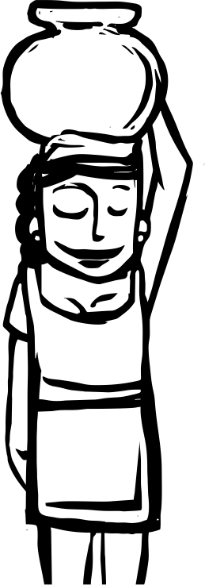
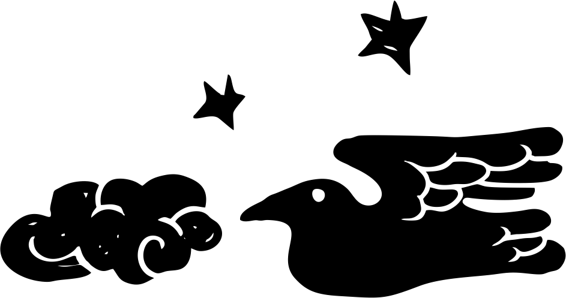

Vidas, Obras e Temas


A presente pesquisa propõe a consolidação de uma ação integrada de cinco Grupos de Pesquisa cadastrados no CNPq, voltada para a compreensão da diversidade cultural brasileira, preservação da memória coletiva e valorização da tradição popular produzida por mulheres.
Tem-se como objetivo geral mapear a produção poética feminina da Literatura de Cordel, promovendo a visibilidade das poetisas e de suas criações.